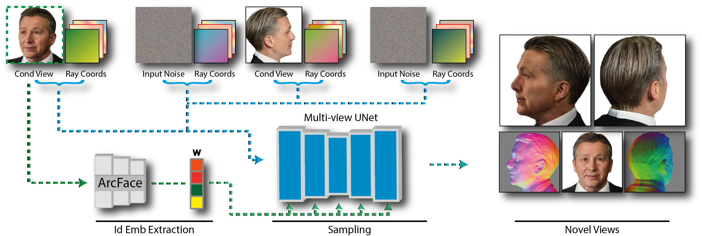

Starting with the given input conditioning views, the identity embedding W is extracted via a Face Recognition network (ArcFace).
Both the conditioning and target views are encoded and combined with corresponding ray coordinate maps that represent camera poses.
After sampling, our method synthesizes photorealistic images from novel angles, along with their associated shape normals N.